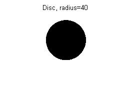
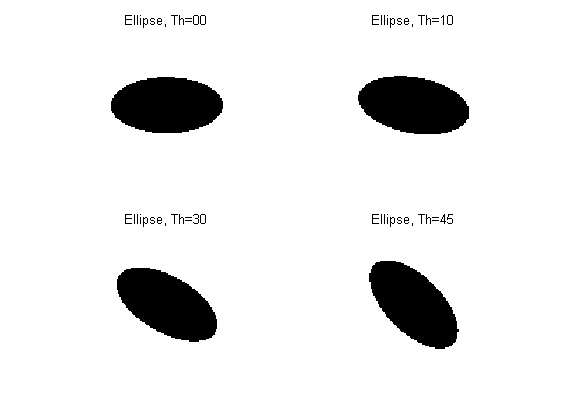
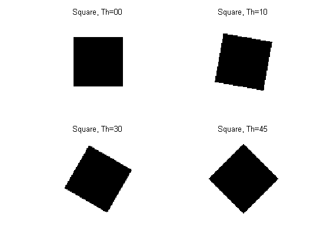
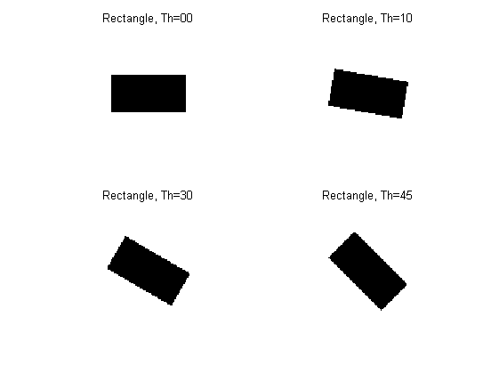
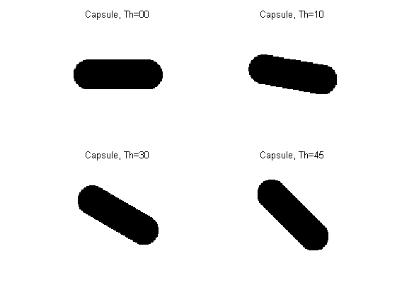
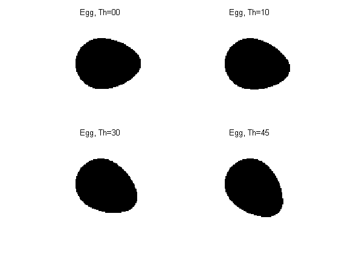
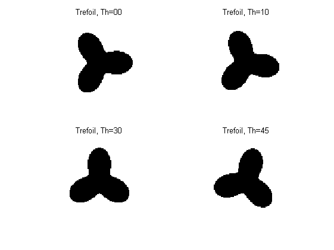
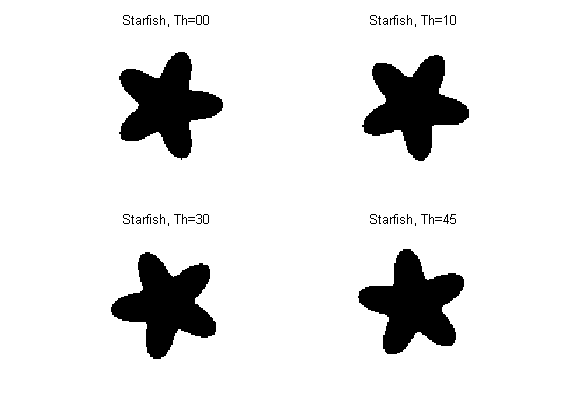

Contents
initialisations
lx = 1:100;
ly = 1:100;
center = [50+sqrt(2)-1 50+sqrt(3)-1];
angles = [...
0; ...
10; ...
30; ...
45];
Disc
disc = [center 40];
img = discreteDisc(lx, ly, disc);
f = figure;
imshow(~img);
title('Disc, radius=40');

Ellipse
figure;
for i = 1:4
ellipse = [center 40 20 angles(i)];
img = discreteEllipse(lx, ly, ellipse);
subplot(2, 2, i);
imshow(~img);
title(sprintf('Ellipse, Th=%02d', angles(i)));
end

Square
figure;
for i = 1:4
square = [center 60 angles(i)];
img = discreteSquare(lx, ly, square);
subplot(2, 2, i);
imshow(~img);
title(sprintf('Square, Th=%02d', angles(i)));
end

Rectangle
figure;
for i = 1:4
rect = [center 60 30 angles(i)];
img = discreteRectangle(lx, ly, rect);
subplot(2, 2, i);
imshow(~img);
title(sprintf('Rectangle, Th=%02d', angles(i)));
end

Capsule
figure;
for i = 1:4
[dx dy] = pol2cart(deg2rad(angles(i)), 30);
caps = [center-[dx dy] center+[dx dy] 15];
img = discreteCapsule(lx, ly, caps);
subplot(2, 2, i);
imshow(~img);
title(sprintf('Capsule, Th=%02d', angles(i)));
end

Egg
figure;
for i = 1:4
egg = [center 30 angles(i)];
img = discreteEgg(lx, ly, egg);
subplot(2, 2, i);
imshow(~img);
title(sprintf('Egg, Th=%02d', angles(i)));
end

Trefoil
figure;
for i = 1:4
trefoil = [center 40 15 angles(i)];
img = discreteTrefoil(lx, ly, trefoil);
subplot(2, 2, i);
imshow(~img);
title(sprintf('Trefoil, Th=%02d', angles(i)));
end

Starfish
figure;
for i = 1:4
starfish = [center 40 20 angles(i)];
img = discreteStarfish(lx, ly, starfish);
subplot(2, 2, i);
imshow(~img);
title(sprintf('Starfish, Th=%02d', angles(i)));
end
